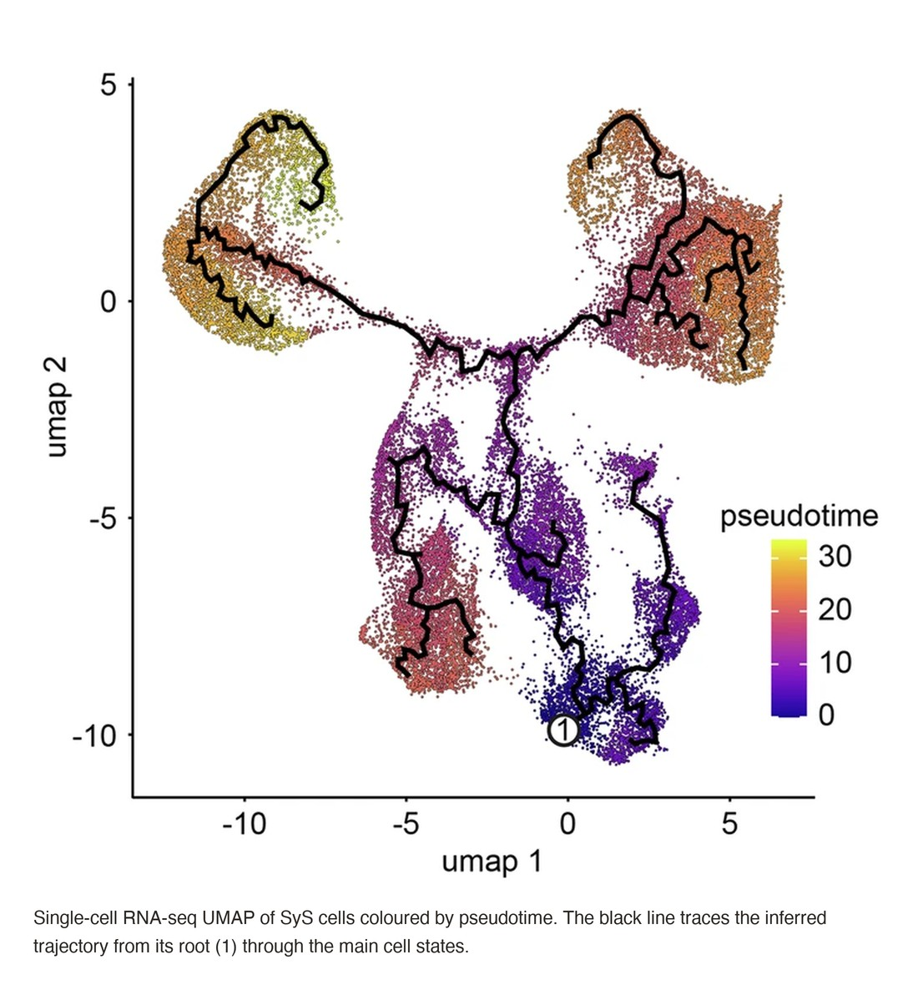

Almost every lab I know is now using AI in some form. A student asks a chatbot to fix an R script. A postdoc has an agent draft a single-cell pipeline. Each of them starts from zero: they explain the project, the data, the conventions, and what went wrong last time. Then the conversation ends, and everything they explained disappears with it.
That is the gap I care about. The models are already good enough to be useful at the bench and at the terminal. What most labs lack is a way for that usefulness to accumulate.
The wins are real, but they are personal
Used well, an agent removes a lot of friction. It writes the boilerplate, remembers the flag you always forget, and turns a vague request into a working first draft of an analysis. For one person, on one afternoon, that is a genuine speed-up.
But a research team is not one person. Knowledge in a lab lives in protocols, in shared folders, in the head of whoever ran the experiment last year. When every person briefs their own AI separately, the lab gets many private assistants and no shared memory.
The question is not whether AI can help one scientist. It is whether a lab's knowledge can compound.
What changed when the context was shared
This is why I built LabWeaver: one shared context for the whole lab. Recurring analyses become reusable skills. ChIP-seq and ATAC-seq processing, single-cell RNA-seq, fusion transcript quantification and GEO submission each run the same way every time, for everyone.
The clearest example came from a synovial sarcoma mouse-model single-cell RNA-seq dataset. A general-purpose agent produced a boilerplate workflow: technically correct and biologically shallow. With the lab's own H&E morphology and marker knowledge in context, the same task surfaced SS18-SSX2 fusion expression and assigned biphasic and monophasic cell states. The model did not get smarter. It got the context a good lab member would have.

The failure modes I watch for
- Confident and wrong. A fluent answer is not a correct one. Gene names, parameters and file paths still need checking.
- Quiet drift. Small changes to thresholds or references between runs can change a result without anyone noticing.
- Results nobody can rerun. An analysis that lives in one chat window cannot be reviewed, repeated or trusted.
Habits that keep results reproducible
- Write the protocol down once, as a skill, and run that instead of re-explaining it.
- Keep data locations, references and versions explicit, never implied.
- Review the plan before the agent runs it, the same way you would review a student's.
- Record every run, so a result can be traced back to exactly how it was made.
- Share memory, not chat logs: what the lab learns should be available to the next person.
What I believe now
AI does not replace scientific judgment. Used well, it makes a lab's judgment reusable. The labs that benefit most will not be the ones with the cleverest prompts. They will be the ones that turn what they know into something the whole team, and every future member, can build on.